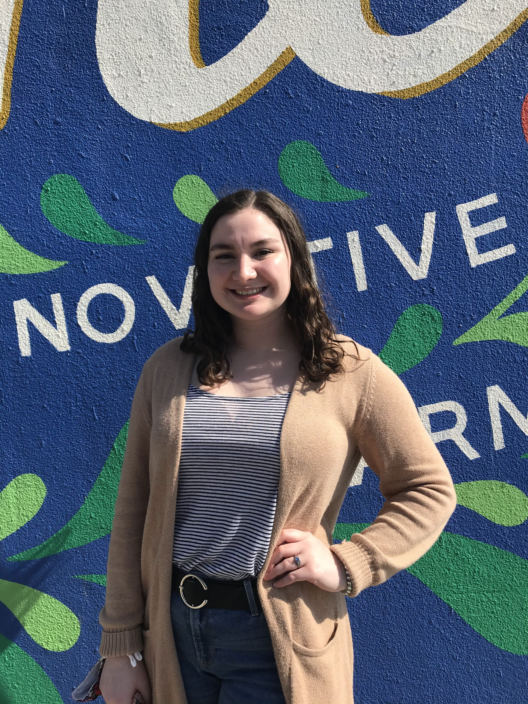
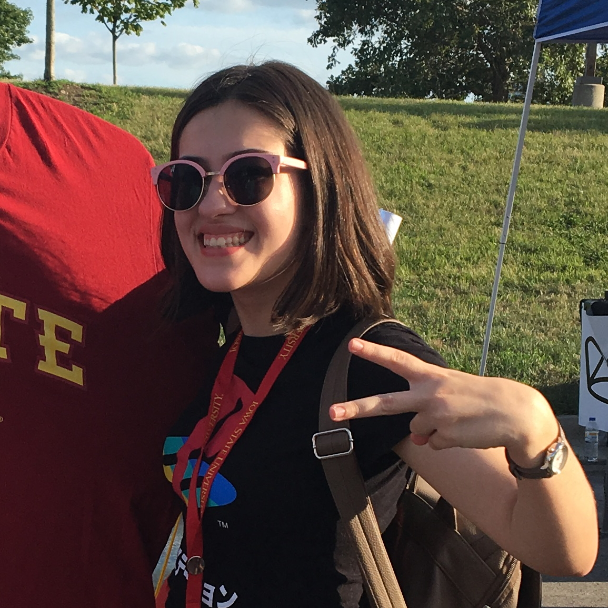

Erica Hollander

Ainara Machargo
Ben Mullin
Ben is a first year student at ISU studying Cyber Security Engineering with a minor in Music Technology. In his spare time, Ben enjoys making music, working on coding projects, cooking, and tinkering with vintage computers.
Kelly Nascimento
Kelly is a second year PhD student in Agricultural and Biosystems Engineering at ISU. Her research is focused on analysing satellite images and maps to better understand how water flow drives soil loss across midwestern landscapes. She enjoys being outdoors, exercising and cooking Brazilian food